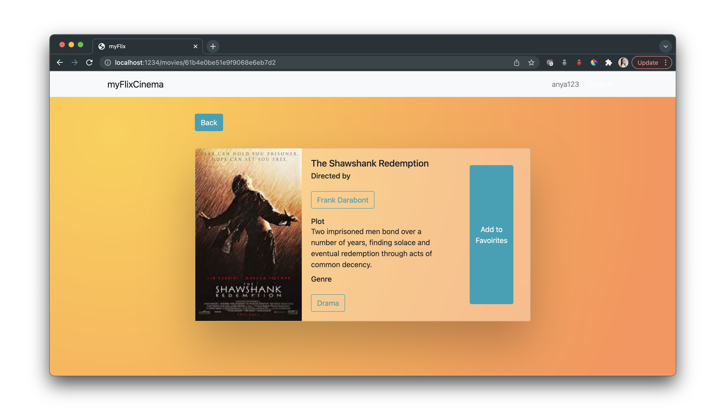
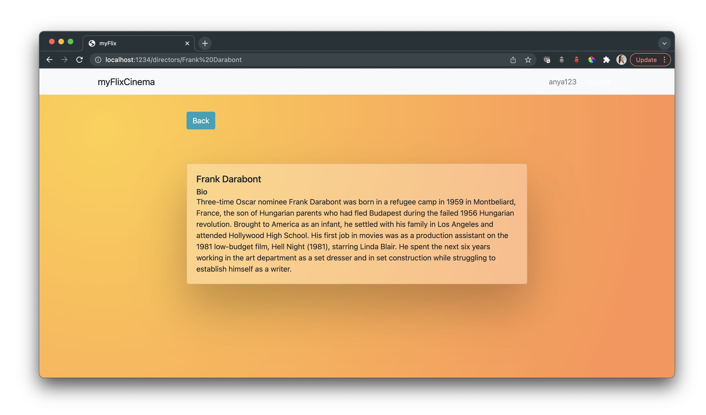

MyFlix App using MERN
Movie Database, API and Client using MongoDB, Express, React and Node
This is a project that explores the fundamentals of server side and client side programming. This was a starting and learning point for me to prepare for building a small Cheese Database App.
Server Side Fundamentals
There were a number of fundamentals to learn or review for the server-side programming. I will be expanding more on this soon. The GitHub repository for the API can be found here.
- Node.js, Packages and Package Managers
- Building of API & using Express to simplify process
- SQL and MongoDB
- Integrating database with API using business logic
- Authentication & Authorization
- Data Security, Validation & Ethics
Client Side Fundamentals
For the client-side will be expanding more on this soon (especially styling improvements) but for the moment I will share below some early screen captures of the fully-functional app using a very basic UI design for now. The GitHub repository for the Client can be found here.
- React
- Client-Side App Routing
- State, Props, Redux and Flux Design Pattern
The UI design is minimalistic in order to get comfortable with the libraries and frameworks. Once complete, this work will be used to rebuild a similar application where a user can browse through data about cheese.
Main View
The user can register and set their password, browse and search movies by title, add or remove movies to and from favorites list, update their user information and change their password.
This is a drill-down of movie information, as an experiment working with flexbox to display information differently.
A very simple view of director information.
A very simple view of genre information.